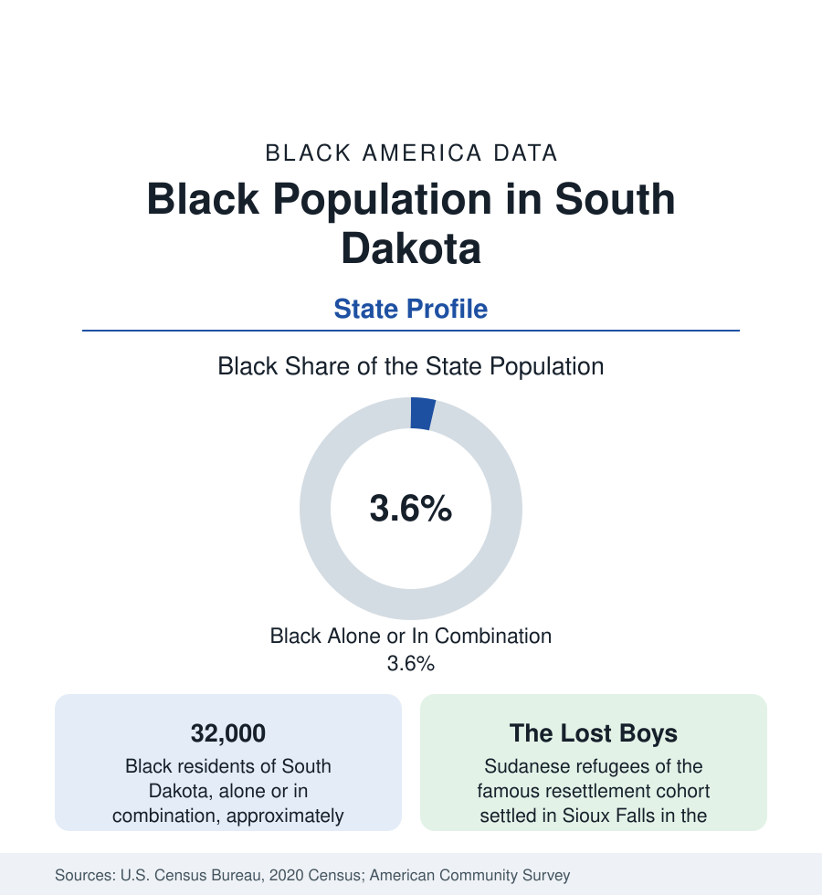

Black Census
Black Population in South Dakota: Sioux Falls and the Lost Boys' Landing
About 32,000 Black South Dakota residents — one in twenty-eight — centered on Sioux Falls, where the 'Lost Boys' of Sudan made their American home. The census profile.

South Dakota holds about 32,000 Black residents — Black alone or in combination — roughly one in twenty-eight of its people, with Black alone at about 18,000, or 2 percent. Two-thirds of them live in and around Sioux Falls, the state's banking-and-health metropolis, whose Black community was reshaped at the century's turn by one of the most famous refugee resettlements in the American record. This article profiles the population, completing the census section's fifty-state survey.
The Historic Layer: Forts, Rails, and Deadwood
Black South Dakota's early record follows the Dakota pattern: Black regulars at Fort Randall, Fort Sisseton, and the Missouri River posts; the Black Hills gold rush drawing Black prospectors, cooks, and entrepreneurs to Deadwood and Lead (the Hills' Black population in the rush decades was small but documented, including business owners on Deadwood's main street); the railroad towns of the Milwaukee and Northwestern lines; and the small congregations of Yankton, Mitchell, and Sioux Falls. The twentieth century's population held in the low thousands — railroad, service, and the Ellsworth (then Rapid City) Air Force Base community after the Second World War — until resettlement rewrote the state's file in a single decade.
Sioux Falls and the Sudanese Chapter
Sioux Falls is a designated resettlement center, and its defining arrival came in the early 2000s, when the United States resettled the 'Lost Boys' of Sudan — the unaccompanied minors of the Sudanese civil war whose story became internationally known — and South Dakota received a notable cohort of them, alongside the broader Sudanese community that followed through family reunification and secondary migration. Ethiopian, Somali, Congolese, Liberian, and Eritrean arrivals layered after, until the city of Sioux Falls' Black population reached roughly 6 to 7 percent of its 200,000 residents — the highest sustained share of any city in either Dakota — centered in the city's north and east districts, its African markets and churches along the Minnesota Avenue and east-side corridors, and its meatpacking and health-care workforces (the packing plants of Sioux Falls and the surrounding towns, and the two great health systems, are the community's largest employers). The metro's suburbs (Brandon, Harrisburg, Tea) hold the community's homeowner growth.
The Rest of the State
Rapid City, the Black Hills gateway, holds the second community — a few percent of the city, on Ellsworth Air Force Base's workforce (the B-1 base east of the city) and the Hills' service economy, with a small historic layer of its own. Aberdeen, Brookings (South Dakota State), and Vermillion (the university) hold small institution-shaped communities; the Missouri River and farm counties record the plains minimum; the reservation counties' tables are dominated, as in North Dakota, by their Native majorities, with Black residents in the dozens to hundreds. The state's Black institutions are Sioux Falls-centered by arithmetic: its African community organizations, its Black churches old and new, and the state historical society's documentation of the Hills and fort eras.
Indicators and Change
The survey picture for 32,000 people is the resettlement profile in plains form: a young population, newcomer incomes on the rising tenure curve, the packing-and-health workforce's steady wages, attainment building through Southeast Tech and the universities. The estimates show Black South Dakota growing at rates well above the state's — Sioux Falls' boom economy (banking charters, health systems, logistics) pulling both the domestic and the international streams — with the Black share of the state rising census by census from its 1 percent twentieth-century plateau.
Reading the South Dakota Numbers
The cultural layer has its institutions now: Sioux Falls' African community celebrations, its Sudanese and Ethiopian congregations (some worshipping in the city's older church buildings, in the succession pattern of every resettlement profile in this section), and a growing shelf of memoir and scholarship from the Lost Boys generation itself — the community documenting its own arrival in the first person, a stage the older Black communities of this reference reached in print a century ago.
South Dakota's profile closes the fifty-state file on the theme the file keeps returning to at every scale: a small historic layer, a single transformative migration, a community built within a generation. The Lost Boys who arrived as teenagers are now the fathers of Sioux Falls-born children counted in these tables — the census catching, in its driest columns, one of the century's great rescue stories becoming an American community.
More in Black Census
The Black Population of the United States: Size, Definitions, and Distribution
The Black population of the United States totals 52.8 million — 15.4 percent of the nation. How the Census Bureau defines and counts the population, and where it lives.
Black Median Household Income in the United States
Black median household income stands at $56,490 in the Census Bureau's annual income report — how the figure is measured, how it compares, and what drives it.
The Black Poverty Rate: Levels, Children, and the Long Trend
The official Black poverty rate is 17.1 percent — against 11.1 percent nationally and 7.7 percent for non-Hispanic White Americans. How poverty is measured and what the data show.
Source: U.S. Census Bureau, 2020 Census; American Community Survey; Population Estimates Program.